Note
Click here to download the full example code
Repairing artifacts with ICA¶
This tutorial covers the basics of independent components analysis (ICA) and shows how ICA can be used for artifact repair; an extended example illustrates repair of ocular and heartbeat artifacts. For conceptual background on ICA, see this scikit-learn tutorial.
We begin as always by importing the necessary Python modules and loading some
example data. Because ICA can be computationally
intense, we’ll also crop the data to 60 seconds; and to save ourselves from
repeatedly typing mne.preprocessing we’ll directly import a few functions
and classes from that submodule:
import os
import mne
from mne.preprocessing import (ICA, create_eog_epochs, create_ecg_epochs,
corrmap)
sample_data_folder = mne.datasets.sample.data_path()
sample_data_raw_file = os.path.join(sample_data_folder, 'MEG', 'sample',
'sample_audvis_raw.fif')
raw = mne.io.read_raw_fif(sample_data_raw_file)
raw.crop(tmax=60.)
Out:
Opening raw data file /home/circleci/mne_data/MNE-sample-data/MEG/sample/sample_audvis_raw.fif...
Read a total of 3 projection items:
PCA-v1 (1 x 102) idle
PCA-v2 (1 x 102) idle
PCA-v3 (1 x 102) idle
Range : 25800 ... 192599 = 42.956 ... 320.670 secs
Ready.
Note
Before applying ICA (or any artifact repair strategy), be sure to observe the artifacts in your data to make sure you choose the right repair tool. Sometimes the right tool is no tool at all — if the artifacts are small enough you may not even need to repair them to get good analysis results. See Overview of artifact detection for guidance on detecting and visualizing various types of artifact.
What is ICA?¶
Independent components analysis (ICA) is a technique for estimating independent source signals from a set of recordings in which the source signals were mixed together in unknown ratios. A common example of this is the problem of blind source separation: with 3 musical instruments playing in the same room, and 3 microphones recording the performance (each picking up all 3 instruments, but at varying levels), can you somehow “unmix” the signals recorded by the 3 microphones so that you end up with a separate “recording” isolating the sound of each instrument?
It is not hard to see how this analogy applies to EEG/MEG analysis: there are many “microphones” (sensor channels) simultaneously recording many “instruments” (blinks, heartbeats, activity in different areas of the brain, muscular activity from jaw clenching or swallowing, etc). As long as these various source signals are statistically independent and non-gaussian, it is usually possible to separate the sources using ICA, and then re-construct the sensor signals after excluding the sources that are unwanted.
ICA in MNE-Python¶
MNE-Python implements three different ICA algorithms: fastica (the
default), picard, and infomax. FastICA and Infomax are both in fairly
widespread use; Picard is a newer (2017) algorithm that is expected to
converge faster than FastICA and Infomax, and is more robust than other
algorithms in cases where the sources are not completely independent, which
typically happens with real EEG/MEG data. See
1 for more information.
The ICA interface in MNE-Python is similar to the interface in
scikit-learn: some general parameters are specified when creating an
ICA object, then the ICA object is
fit to the data using its fit method. The results of
the fitting are added to the ICA object as attributes
that end in an underscore (_), such as ica.mixing_matrix_ and
ica.unmixing_matrix_. After fitting, the ICA component(s) that you want
to remove must be chosen, and the ICA fit must then be applied to the
Raw or Epochs object using the ICA
object’s apply method.
As is typically done with ICA, the data are first scaled to unit variance and whitened using principal components analysis (PCA) before performing the ICA decomposition. This is a two-stage process:
To deal with different channel types having different units (e.g., Volts for EEG and Tesla for MEG), data must be pre-whitened. If
noise_cov=None(default), all data of a given channel type is scaled by the standard deviation across all channels. Ifnoise_covis aCovariance, the channels are pre-whitened using the covariance.The pre-whitened data are then decomposed using PCA.
From the resulting principal components (PCs), the first n_components are
then passed to the ICA algorithm if n_components is an integer number.
It can also be a float between 0 and 1, specifying the fraction of
explained variance that the PCs should capture; the appropriate number of
PCs (i.e., just as many PCs as are required to explain the given fraction
of total variance) is then passed to the ICA.
After visualizing the Independent Components (ICs) and excluding any that
capture artifacts you want to repair, the sensor signal can be reconstructed
using the ICA object’s
apply method. By default, signal
reconstruction uses all of the ICs (less any ICs listed in ICA.exclude)
plus all of the PCs that were not included in the ICA decomposition (i.e.,
the “PCA residual”). If you want to reduce the number of components used at
the reconstruction stage, it is controlled by the n_pca_components
parameter (which will in turn reduce the rank of your data; by default
n_pca_components=None resulting in no additional dimensionality
reduction). The fitting and reconstruction procedures and the
parameters that control dimensionality at various stages are summarized in
the diagram below:

See the Notes section of the ICA documentation
for further details. Next we’ll walk through an extended example that
illustrates each of these steps in greater detail.
Example: EOG and ECG artifact repair¶
Visualizing the artifacts¶
Let’s begin by visualizing the artifacts that we want to repair. In this dataset they are big enough to see easily in the raw data:
# pick some channels that clearly show heartbeats and blinks
regexp = r'(MEG [12][45][123]1|EEG 00.)'
artifact_picks = mne.pick_channels_regexp(raw.ch_names, regexp=regexp)
raw.plot(order=artifact_picks, n_channels=len(artifact_picks),
show_scrollbars=False)
We can get a summary of how the ocular artifact manifests across each channel
type using create_eog_epochs like we did in the
Overview of artifact detection tutorial:
eog_evoked = create_eog_epochs(raw).average()
eog_evoked.apply_baseline(baseline=(None, -0.2))
eog_evoked.plot_joint()
- 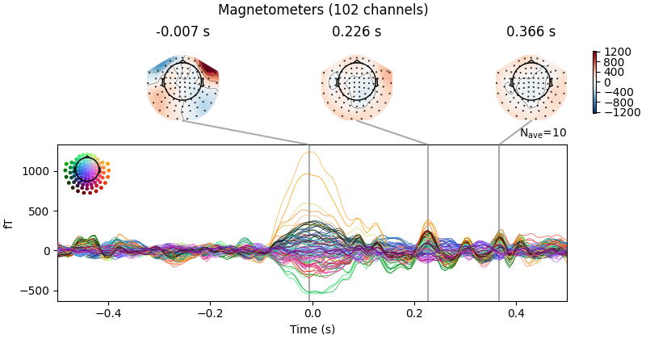
Out:
Using EOG channel: EOG 061
EOG channel index for this subject is: [375]
Filtering the data to remove DC offset to help distinguish blinks from saccades
Setting up band-pass filter from 1 - 10 Hz
FIR filter parameters
---------------------
Designing a two-pass forward and reverse, zero-phase, non-causal bandpass filter:
- Windowed frequency-domain design (firwin2) method
- Hann window
- Lower passband edge: 1.00
- Lower transition bandwidth: 0.50 Hz (-12 dB cutoff frequency: 0.75 Hz)
- Upper passband edge: 10.00 Hz
- Upper transition bandwidth: 0.50 Hz (-12 dB cutoff frequency: 10.25 Hz)
- Filter length: 6007 samples (10.001 sec)
Now detecting blinks and generating corresponding events
Found 10 significant peaks
Number of EOG events detected: 10
Not setting metadata
Not setting metadata
10 matching events found
No baseline correction applied
Created an SSP operator (subspace dimension = 3)
Loading data for 10 events and 601 original time points ...
0 bad epochs dropped
Applying baseline correction (mode: mean)
Created an SSP operator (subspace dimension = 3)
3 projection items activated
SSP projectors applied...
Removing projector <Projection | PCA-v1, active : True, n_channels : 102>
Removing projector <Projection | PCA-v2, active : True, n_channels : 102>
Removing projector <Projection | PCA-v3, active : True, n_channels : 102>
Removing projector <Projection | PCA-v1, active : True, n_channels : 102>
Removing projector <Projection | PCA-v2, active : True, n_channels : 102>
Removing projector <Projection | PCA-v3, active : True, n_channels : 102>
Now we’ll do the same for the heartbeat artifacts, using
create_ecg_epochs:
ecg_evoked = create_ecg_epochs(raw).average()
ecg_evoked.apply_baseline(baseline=(None, -0.2))
ecg_evoked.plot_joint()
Out:
Reconstructing ECG signal from Magnetometers
Setting up band-pass filter from 8 - 16 Hz
FIR filter parameters
---------------------
Designing a two-pass forward and reverse, zero-phase, non-causal bandpass filter:
- Windowed frequency-domain design (firwin2) method
- Hann window
- Lower passband edge: 8.00
- Lower transition bandwidth: 0.50 Hz (-12 dB cutoff frequency: 7.75 Hz)
- Upper passband edge: 16.00 Hz
- Upper transition bandwidth: 0.50 Hz (-12 dB cutoff frequency: 16.25 Hz)
- Filter length: 6007 samples (10.001 sec)
Number of ECG events detected : 59 (average pulse 58 / min.)
Not setting metadata
Not setting metadata
59 matching events found
No baseline correction applied
Created an SSP operator (subspace dimension = 3)
Loading data for 59 events and 601 original time points ...
0 bad epochs dropped
Applying baseline correction (mode: mean)
Created an SSP operator (subspace dimension = 3)
3 projection items activated
SSP projectors applied...
Removing projector <Projection | PCA-v1, active : True, n_channels : 102>
Removing projector <Projection | PCA-v2, active : True, n_channels : 102>
Removing projector <Projection | PCA-v3, active : True, n_channels : 102>
Removing projector <Projection | PCA-v1, active : True, n_channels : 102>
Removing projector <Projection | PCA-v2, active : True, n_channels : 102>
Removing projector <Projection | PCA-v3, active : True, n_channels : 102>
Filtering to remove slow drifts¶
Before we run the ICA, an important step is filtering the data to remove
low-frequency drifts, which can negatively affect the quality of the ICA fit.
The slow drifts are problematic because they reduce the independence of the
assumed-to-be-independent sources (e.g., during a slow upward drift, the
neural, heartbeat, blink, and other muscular sources will all tend to have
higher values), making it harder for the algorithm to find an accurate
solution. A high-pass filter with 1 Hz cutoff frequency is recommended.
However, because filtering is a linear operation, the ICA solution found from
the filtered signal can be applied to the unfiltered signal (see
2 for
more information), so we’ll keep a copy of the unfiltered
Raw object around so we can apply the ICA solution to it
later.
filt_raw = raw.copy()
filt_raw.load_data().filter(l_freq=1., h_freq=None)
Out:
Reading 0 ... 36037 = 0.000 ... 60.000 secs...
Filtering raw data in 1 contiguous segment
Setting up high-pass filter at 1 Hz
FIR filter parameters
---------------------
Designing a one-pass, zero-phase, non-causal highpass filter:
- Windowed time-domain design (firwin) method
- Hamming window with 0.0194 passband ripple and 53 dB stopband attenuation
- Lower passband edge: 1.00
- Lower transition bandwidth: 1.00 Hz (-6 dB cutoff frequency: 0.50 Hz)
- Filter length: 1983 samples (3.302 sec)
Fitting and plotting the ICA solution¶
Now we’re ready to set up and fit the ICA. Since we know (from observing our
raw data) that the EOG and ECG artifacts are fairly strong, we would expect
those artifacts to be captured in the first few dimensions of the PCA
decomposition that happens before the ICA. Therefore, we probably don’t need
a huge number of components to do a good job of isolating our artifacts
(though it is usually preferable to include more components for a more
accurate solution). As a first guess, we’ll run ICA with n_components=15
(use only the first 15 PCA components to compute the ICA decomposition) — a
very small number given that our data has over 300 channels, but with the
advantage that it will run quickly and we will able to tell easily whether it
worked or not (because we already know what the EOG / ECG artifacts should
look like).
ICA fitting is not deterministic (e.g., the components may get a sign flip on different runs, or may not always be returned in the same order), so we’ll also specify a random seed so that we get identical results each time this tutorial is built by our web servers.
Out:
Fitting ICA to data using 364 channels (please be patient, this may take a while)
Selecting by number: 15 components
Fitting ICA took 7.8s.
Some optional parameters that we could have passed to the
fit method include decim (to use only
every Nth sample in computing the ICs, which can yield a considerable
speed-up) and reject (for providing a rejection dictionary for maximum
acceptable peak-to-peak amplitudes for each channel type, just like we used
when creating epoched data in the Overview of MEG/EEG analysis with MNE-Python tutorial).
Now we can examine the ICs to see what they captured.
plot_sources will show the time series of the
ICs. Note that in our call to plot_sources we
can use the original, unfiltered Raw object:
raw.load_data()
ica.plot_sources(raw, show_scrollbars=False)
Out:
Reading 0 ... 36037 = 0.000 ... 60.000 secs...
Creating RawArray with float64 data, n_channels=16, n_times=36038
Range : 25800 ... 61837 = 42.956 ... 102.956 secs
Ready.
Here we can pretty clearly see that the first component (ICA000) captures
the EOG signal quite well, and the second component (ICA001) looks a lot
like a heartbeat (for more info on visually identifying Independent
Components, this EEGLAB tutorial is a good resource). We can also
visualize the scalp field distribution of each component using
plot_components. These are interpolated based
on the values in the ICA mixing matrix:
Note
plot_components (which plots the scalp
field topographies for each component) has an optional inst parameter
that takes an instance of Raw or Epochs.
Passing inst makes the scalp topographies interactive: clicking one
will bring up a diagnostic plot_properties
window (see below) for that component.
In the plots above it’s fairly obvious which ICs are capturing our EOG and
ECG artifacts, but there are additional ways visualize them anyway just to
be sure. First, we can plot an overlay of the original signal against the
reconstructed signal with the artifactual ICs excluded, using
plot_overlay:
# blinks
ica.plot_overlay(raw, exclude=[0], picks='eeg')
# heartbeats
ica.plot_overlay(raw, exclude=[1], picks='mag')


Out:
Applying ICA to Raw instance
Transforming to ICA space (15 components)
Zeroing out 1 ICA component
Projecting back using 364 PCA components
Applying ICA to Raw instance
Transforming to ICA space (15 components)
Zeroing out 1 ICA component
Projecting back using 364 PCA components
We can also plot some diagnostics of each IC using
plot_properties:
ica.plot_properties(raw, picks=[0, 1])

- 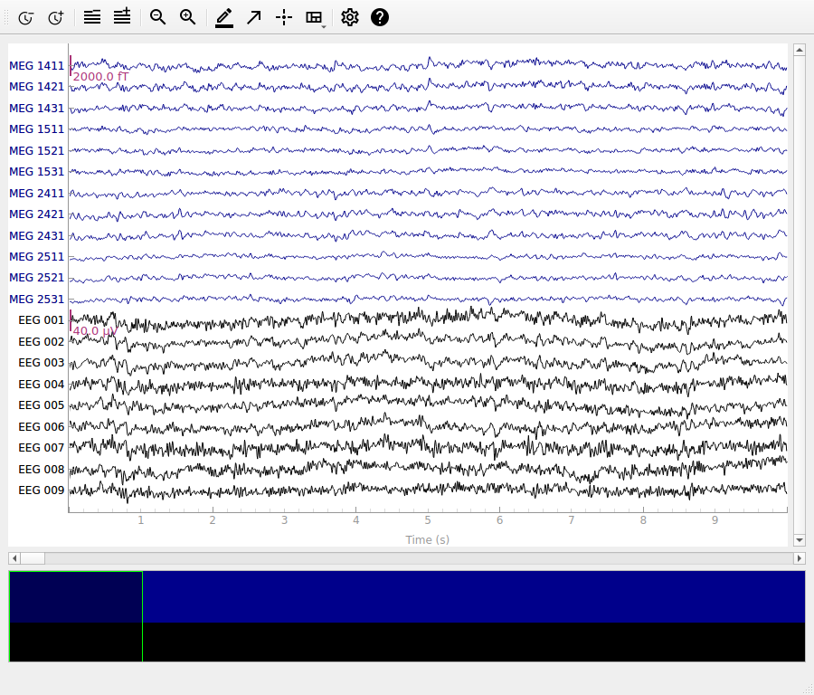
Out:
Using multitaper spectrum estimation with 7 DPSS windows
Not setting metadata
Not setting metadata
30 matching events found
No baseline correction applied
0 projection items activated
0 bad epochs dropped
Not setting metadata
Not setting metadata
30 matching events found
No baseline correction applied
0 projection items activated
0 bad epochs dropped
In the remaining sections, we’ll look at different ways of choosing which ICs to exclude prior to reconstructing the sensor signals.
Selecting ICA components manually¶
Once we’re certain which components we want to exclude, we can specify that
manually by setting the ica.exclude attribute. Similar to marking bad
channels, merely setting ica.exclude doesn’t do anything immediately (it
just adds the excluded ICs to a list that will get used later when it’s
needed). Once the exclusions have been set, ICA methods like
plot_overlay will exclude those component(s)
even if no exclude parameter is passed, and the list of excluded
components will be preserved when using mne.preprocessing.ICA.save
and mne.preprocessing.read_ica.
ica.exclude = [0, 1] # indices chosen based on various plots above
Now that the exclusions have been set, we can reconstruct the sensor signals
with artifacts removed using the apply method
(remember, we’re applying the ICA solution from the filtered data to the
original unfiltered signal). Plotting the original raw data alongside the
reconstructed data shows that the heartbeat and blink artifacts are repaired.
# ica.apply() changes the Raw object in-place, so let's make a copy first:
reconst_raw = raw.copy()
ica.apply(reconst_raw)
raw.plot(order=artifact_picks, n_channels=len(artifact_picks),
show_scrollbars=False)
reconst_raw.plot(order=artifact_picks, n_channels=len(artifact_picks),
show_scrollbars=False)
del reconst_raw
Out:
Applying ICA to Raw instance
Transforming to ICA space (15 components)
Zeroing out 2 ICA components
Projecting back using 364 PCA components
Using an EOG channel to select ICA components¶
It may have seemed easy to review the plots and manually select which ICs to
exclude, but when processing dozens or hundreds of subjects this can become
a tedious, rate-limiting step in the analysis pipeline. One alternative is to
use dedicated EOG or ECG sensors as a “pattern” to check the ICs against, and
automatically mark for exclusion any ICs that match the EOG/ECG pattern. Here
we’ll use find_bads_eog to automatically find
the ICs that best match the EOG signal, then use
plot_scores along with our other plotting
functions to see which ICs it picked. We’ll start by resetting
ica.exclude back to an empty list:
ica.exclude = []
# find which ICs match the EOG pattern
eog_indices, eog_scores = ica.find_bads_eog(raw)
ica.exclude = eog_indices
# barplot of ICA component "EOG match" scores
ica.plot_scores(eog_scores)
# plot diagnostics
ica.plot_properties(raw, picks=eog_indices)
# plot ICs applied to raw data, with EOG matches highlighted
ica.plot_sources(raw, show_scrollbars=False)
# plot ICs applied to the averaged EOG epochs, with EOG matches highlighted
ica.plot_sources(eog_evoked)


Out:
Using EOG channel: EOG 061
... filtering ICA sources
Setting up band-pass filter from 1 - 10 Hz
FIR filter parameters
---------------------
Designing a two-pass forward and reverse, zero-phase, non-causal bandpass filter:
- Windowed frequency-domain design (firwin2) method
- Hann window
- Lower passband edge: 1.00
- Lower transition bandwidth: 0.50 Hz (-12 dB cutoff frequency: 0.75 Hz)
- Upper passband edge: 10.00 Hz
- Upper transition bandwidth: 0.50 Hz (-12 dB cutoff frequency: 10.25 Hz)
- Filter length: 6007 samples (10.001 sec)
... filtering target
Setting up band-pass filter from 1 - 10 Hz
FIR filter parameters
---------------------
Designing a two-pass forward and reverse, zero-phase, non-causal bandpass filter:
- Windowed frequency-domain design (firwin2) method
- Hann window
- Lower passband edge: 1.00
- Lower transition bandwidth: 0.50 Hz (-12 dB cutoff frequency: 0.75 Hz)
- Upper passband edge: 10.00 Hz
- Upper transition bandwidth: 0.50 Hz (-12 dB cutoff frequency: 10.25 Hz)
- Filter length: 6007 samples (10.001 sec)
Using multitaper spectrum estimation with 7 DPSS windows
Not setting metadata
Not setting metadata
30 matching events found
No baseline correction applied
0 projection items activated
0 bad epochs dropped
Creating RawArray with float64 data, n_channels=16, n_times=36038
Range : 25800 ... 61837 = 42.956 ... 102.956 secs
Ready.
Note that above we used plot_sources on both
the original Raw instance and also on an
Evoked instance of the extracted EOG artifacts. This can be
another way to confirm that find_bads_eog has
identified the correct components.
Using a simulated channel to select ICA components¶
If you don’t have an EOG channel,
find_bads_eog has a ch_name parameter that
you can use as a proxy for EOG. You can use a single channel, or create a
bipolar reference from frontal EEG sensors and use that as virtual EOG
channel. This carries a risk however: you must hope that the frontal EEG
channels only reflect EOG and not brain dynamics in the prefrontal cortex (or
you must not care about those prefrontal signals).
For ECG, it is easier: find_bads_ecg can use
cross-channel averaging of magnetometer or gradiometer channels to construct
a virtual ECG channel, so if you have MEG channels it is usually not
necessary to pass a specific channel name.
find_bads_ecg also has two options for its
method parameter: 'ctps' (cross-trial phase statistics
3) and
'correlation' (Pearson correlation between data and ECG channel).
ica.exclude = []
# find which ICs match the ECG pattern
ecg_indices, ecg_scores = ica.find_bads_ecg(raw, method='correlation',
threshold='auto')
ica.exclude = ecg_indices
# barplot of ICA component "ECG match" scores
ica.plot_scores(ecg_scores)
# plot diagnostics
ica.plot_properties(raw, picks=ecg_indices)
# plot ICs applied to raw data, with ECG matches highlighted
ica.plot_sources(raw, show_scrollbars=False)
# plot ICs applied to the averaged ECG epochs, with ECG matches highlighted
ica.plot_sources(ecg_evoked)

Out:
Reconstructing ECG signal from Magnetometers
... filtering ICA sources
Setting up band-pass filter from 8 - 16 Hz
FIR filter parameters
---------------------
Designing a two-pass forward and reverse, zero-phase, non-causal bandpass filter:
- Windowed frequency-domain design (firwin2) method
- Hann window
- Lower passband edge: 8.00
- Lower transition bandwidth: 0.50 Hz (-12 dB cutoff frequency: 7.75 Hz)
- Upper passband edge: 16.00 Hz
- Upper transition bandwidth: 0.50 Hz (-12 dB cutoff frequency: 16.25 Hz)
- Filter length: 6007 samples (10.001 sec)
... filtering target
Setting up band-pass filter from 8 - 16 Hz
FIR filter parameters
---------------------
Designing a two-pass forward and reverse, zero-phase, non-causal bandpass filter:
- Windowed frequency-domain design (firwin2) method
- Hann window
- Lower passband edge: 8.00
- Lower transition bandwidth: 0.50 Hz (-12 dB cutoff frequency: 7.75 Hz)
- Upper passband edge: 16.00 Hz
- Upper transition bandwidth: 0.50 Hz (-12 dB cutoff frequency: 16.25 Hz)
- Filter length: 6007 samples (10.001 sec)
Using multitaper spectrum estimation with 7 DPSS windows
Not setting metadata
Not setting metadata
30 matching events found
No baseline correction applied
0 projection items activated
0 bad epochs dropped
Creating RawArray with float64 data, n_channels=16, n_times=36038
Range : 25800 ... 61837 = 42.956 ... 102.956 secs
Ready.
The last of these plots is especially useful: it shows us that the heartbeat
artifact is coming through on two ICs, and we’ve only caught one of them.
In fact, if we look closely at the output of
plot_sources (online, you can right-click →
“view image” to zoom in), it looks like ICA014 has a weak periodic
component that is in-phase with ICA001. It might be worthwhile to re-run
the ICA with more components to see if that second heartbeat artifact
resolves out a little better:
# refit the ICA with 30 components this time
new_ica = ICA(n_components=30, max_iter='auto', random_state=97)
new_ica.fit(filt_raw)
# find which ICs match the ECG pattern
ecg_indices, ecg_scores = new_ica.find_bads_ecg(raw, method='correlation',
threshold='auto')
new_ica.exclude = ecg_indices
# barplot of ICA component "ECG match" scores
new_ica.plot_scores(ecg_scores)
# plot diagnostics
new_ica.plot_properties(raw, picks=ecg_indices)
# plot ICs applied to raw data, with ECG matches highlighted
new_ica.plot_sources(raw, show_scrollbars=False)
# plot ICs applied to the averaged ECG epochs, with ECG matches highlighted
new_ica.plot_sources(ecg_evoked)
- 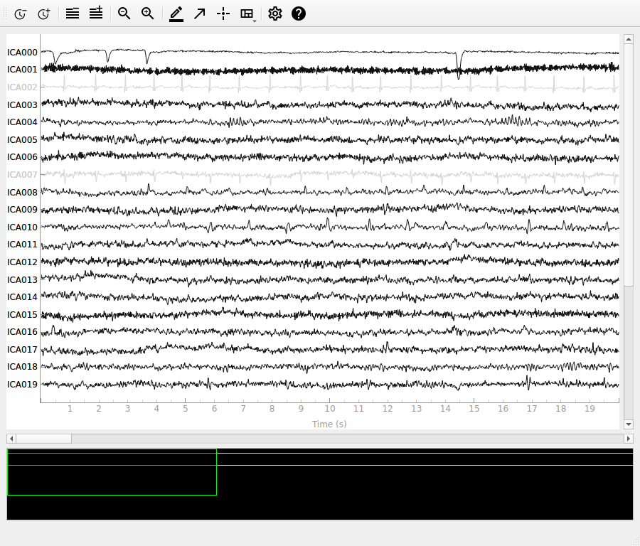

Out:
Fitting ICA to data using 364 channels (please be patient, this may take a while)
Selecting by number: 30 components
Fitting ICA took 8.7s.
Reconstructing ECG signal from Magnetometers
... filtering ICA sources
Setting up band-pass filter from 8 - 16 Hz
FIR filter parameters
---------------------
Designing a two-pass forward and reverse, zero-phase, non-causal bandpass filter:
- Windowed frequency-domain design (firwin2) method
- Hann window
- Lower passband edge: 8.00
- Lower transition bandwidth: 0.50 Hz (-12 dB cutoff frequency: 7.75 Hz)
- Upper passband edge: 16.00 Hz
- Upper transition bandwidth: 0.50 Hz (-12 dB cutoff frequency: 16.25 Hz)
- Filter length: 6007 samples (10.001 sec)
... filtering target
Setting up band-pass filter from 8 - 16 Hz
FIR filter parameters
---------------------
Designing a two-pass forward and reverse, zero-phase, non-causal bandpass filter:
- Windowed frequency-domain design (firwin2) method
- Hann window
- Lower passband edge: 8.00
- Lower transition bandwidth: 0.50 Hz (-12 dB cutoff frequency: 7.75 Hz)
- Upper passband edge: 16.00 Hz
- Upper transition bandwidth: 0.50 Hz (-12 dB cutoff frequency: 16.25 Hz)
- Filter length: 6007 samples (10.001 sec)
Using multitaper spectrum estimation with 7 DPSS windows
Not setting metadata
Not setting metadata
30 matching events found
No baseline correction applied
0 projection items activated
0 bad epochs dropped
Not setting metadata
Not setting metadata
30 matching events found
No baseline correction applied
0 projection items activated
0 bad epochs dropped
Creating RawArray with float64 data, n_channels=31, n_times=36038
Range : 25800 ... 61837 = 42.956 ... 102.956 secs
Ready.
Much better! Now we’ve captured both ICs that are reflecting the heartbeat
artifact (and as a result, we got two diagnostic plots: one for each IC that
reflects the heartbeat). This demonstrates the value of checking the results
of automated approaches like find_bads_ecg
before accepting them.
# clean up memory before moving on
del raw, ica, new_ica
Selecting ICA components using template matching¶
When dealing with multiple subjects, it is also possible to manually select
an IC for exclusion on one subject, and then use that component as a
template for selecting which ICs to exclude from other subjects’ data,
using mne.preprocessing.corrmap 4.
The idea behind
corrmap is that the artifact patterns are similar
enough across subjects that corresponding ICs can be identified by
correlating the ICs from each ICA solution with a common template, and
picking the ICs with the highest correlation strength.
corrmap takes a list of ICA solutions, and a
template parameter that specifies which ICA object and which component
within it to use as a template.
Since our sample dataset only contains data from one subject, we’ll use a different dataset with multiple subjects: the EEGBCI dataset 56. The dataset has 109 subjects, we’ll just download one run (a left/right hand movement task) from each of the first 4 subjects:
mapping = {
'Fc5.': 'FC5', 'Fc3.': 'FC3', 'Fc1.': 'FC1', 'Fcz.': 'FCz', 'Fc2.': 'FC2',
'Fc4.': 'FC4', 'Fc6.': 'FC6', 'C5..': 'C5', 'C3..': 'C3', 'C1..': 'C1',
'Cz..': 'Cz', 'C2..': 'C2', 'C4..': 'C4', 'C6..': 'C6', 'Cp5.': 'CP5',
'Cp3.': 'CP3', 'Cp1.': 'CP1', 'Cpz.': 'CPz', 'Cp2.': 'CP2', 'Cp4.': 'CP4',
'Cp6.': 'CP6', 'Fp1.': 'Fp1', 'Fpz.': 'Fpz', 'Fp2.': 'Fp2', 'Af7.': 'AF7',
'Af3.': 'AF3', 'Afz.': 'AFz', 'Af4.': 'AF4', 'Af8.': 'AF8', 'F7..': 'F7',
'F5..': 'F5', 'F3..': 'F3', 'F1..': 'F1', 'Fz..': 'Fz', 'F2..': 'F2',
'F4..': 'F4', 'F6..': 'F6', 'F8..': 'F8', 'Ft7.': 'FT7', 'Ft8.': 'FT8',
'T7..': 'T7', 'T8..': 'T8', 'T9..': 'T9', 'T10.': 'T10', 'Tp7.': 'TP7',
'Tp8.': 'TP8', 'P7..': 'P7', 'P5..': 'P5', 'P3..': 'P3', 'P1..': 'P1',
'Pz..': 'Pz', 'P2..': 'P2', 'P4..': 'P4', 'P6..': 'P6', 'P8..': 'P8',
'Po7.': 'PO7', 'Po3.': 'PO3', 'Poz.': 'POz', 'Po4.': 'PO4', 'Po8.': 'PO8',
'O1..': 'O1', 'Oz..': 'Oz', 'O2..': 'O2', 'Iz..': 'Iz'
}
raws = list()
icas = list()
for subj in range(4):
# EEGBCI subjects are 1-indexed; run 3 is a left/right hand movement task
fname = mne.datasets.eegbci.load_data(subj + 1, runs=[3])[0]
raw = mne.io.read_raw_edf(fname)
# remove trailing `.` from channel names so we can set montage
raw.rename_channels(mapping)
raw.set_montage('standard_1005')
# high-pass filter
raw_filt = raw.copy().load_data().filter(l_freq=1., h_freq=None)
# fit ICA
ica = ICA(n_components=30, max_iter='auto', random_state=97)
ica.fit(raw_filt)
raws.append(raw)
icas.append(ica)
Out:
Extracting EDF parameters from /home/circleci/mne_data/MNE-eegbci-data/files/eegmmidb/1.0.0/S001/S001R03.edf...
EDF file detected
Setting channel info structure...
Creating raw.info structure...
Reading 0 ... 19999 = 0.000 ... 124.994 secs...
Filtering raw data in 1 contiguous segment
Setting up high-pass filter at 1 Hz
FIR filter parameters
---------------------
Designing a one-pass, zero-phase, non-causal highpass filter:
- Windowed time-domain design (firwin) method
- Hamming window with 0.0194 passband ripple and 53 dB stopband attenuation
- Lower passband edge: 1.00
- Lower transition bandwidth: 1.00 Hz (-6 dB cutoff frequency: 0.50 Hz)
- Filter length: 529 samples (3.306 sec)
Fitting ICA to data using 64 channels (please be patient, this may take a while)
Selecting by number: 30 components
Fitting ICA took 5.4s.
Extracting EDF parameters from /home/circleci/mne_data/MNE-eegbci-data/files/eegmmidb/1.0.0/S002/S002R03.edf...
EDF file detected
Setting channel info structure...
Creating raw.info structure...
Reading 0 ... 19679 = 0.000 ... 122.994 secs...
Filtering raw data in 1 contiguous segment
Setting up high-pass filter at 1 Hz
FIR filter parameters
---------------------
Designing a one-pass, zero-phase, non-causal highpass filter:
- Windowed time-domain design (firwin) method
- Hamming window with 0.0194 passband ripple and 53 dB stopband attenuation
- Lower passband edge: 1.00
- Lower transition bandwidth: 1.00 Hz (-6 dB cutoff frequency: 0.50 Hz)
- Filter length: 529 samples (3.306 sec)
Fitting ICA to data using 64 channels (please be patient, this may take a while)
Selecting by number: 30 components
Fitting ICA took 8.6s.
Extracting EDF parameters from /home/circleci/mne_data/MNE-eegbci-data/files/eegmmidb/1.0.0/S003/S003R03.edf...
EDF file detected
Setting channel info structure...
Creating raw.info structure...
Reading 0 ... 19999 = 0.000 ... 124.994 secs...
Filtering raw data in 1 contiguous segment
Setting up high-pass filter at 1 Hz
FIR filter parameters
---------------------
Designing a one-pass, zero-phase, non-causal highpass filter:
- Windowed time-domain design (firwin) method
- Hamming window with 0.0194 passband ripple and 53 dB stopband attenuation
- Lower passband edge: 1.00
- Lower transition bandwidth: 1.00 Hz (-6 dB cutoff frequency: 0.50 Hz)
- Filter length: 529 samples (3.306 sec)
Fitting ICA to data using 64 channels (please be patient, this may take a while)
Selecting by number: 30 components
Fitting ICA took 7.3s.
Extracting EDF parameters from /home/circleci/mne_data/MNE-eegbci-data/files/eegmmidb/1.0.0/S004/S004R03.edf...
EDF file detected
Setting channel info structure...
Creating raw.info structure...
Reading 0 ... 19679 = 0.000 ... 122.994 secs...
Filtering raw data in 1 contiguous segment
Setting up high-pass filter at 1 Hz
FIR filter parameters
---------------------
Designing a one-pass, zero-phase, non-causal highpass filter:
- Windowed time-domain design (firwin) method
- Hamming window with 0.0194 passband ripple and 53 dB stopband attenuation
- Lower passband edge: 1.00
- Lower transition bandwidth: 1.00 Hz (-6 dB cutoff frequency: 0.50 Hz)
- Filter length: 529 samples (3.306 sec)
Fitting ICA to data using 64 channels (please be patient, this may take a while)
Selecting by number: 30 components
Fitting ICA took 63.1s.
Now let’s run corrmap:
# use the first subject as template; use Fpz as proxy for EOG
raw = raws[0]
ica = icas[0]
eog_inds, eog_scores = ica.find_bads_eog(raw, ch_name='Fpz')
corrmap(icas, template=(0, eog_inds[0]))
- 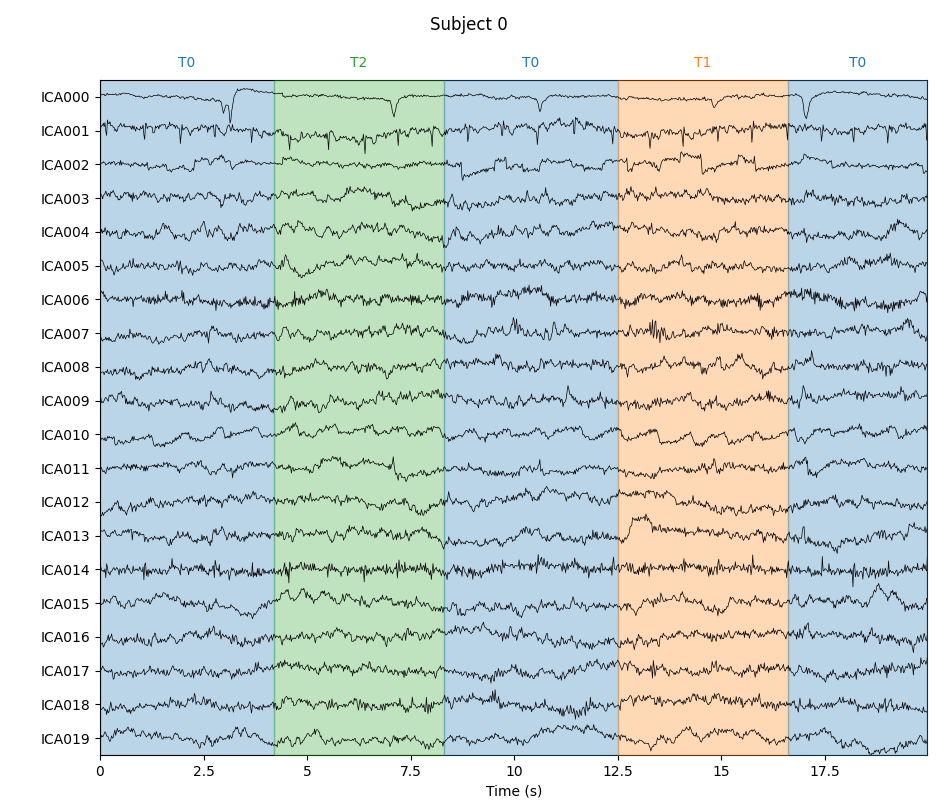
- 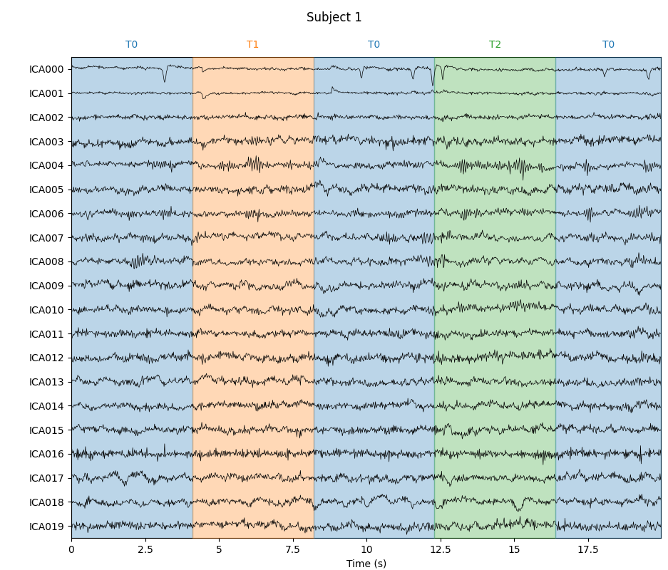
Out:
Using EOG channel: Fpz
... filtering ICA sources
Setting up band-pass filter from 1 - 10 Hz
FIR filter parameters
---------------------
Designing a two-pass forward and reverse, zero-phase, non-causal bandpass filter:
- Windowed frequency-domain design (firwin2) method
- Hann window
- Lower passband edge: 1.00
- Lower transition bandwidth: 0.50 Hz (-12 dB cutoff frequency: 0.75 Hz)
- Upper passband edge: 10.00 Hz
- Upper transition bandwidth: 0.50 Hz (-12 dB cutoff frequency: 10.25 Hz)
- Filter length: 1600 samples (10.000 sec)
... filtering target
Setting up band-pass filter from 1 - 10 Hz
FIR filter parameters
---------------------
Designing a two-pass forward and reverse, zero-phase, non-causal bandpass filter:
- Windowed frequency-domain design (firwin2) method
- Hann window
- Lower passband edge: 1.00
- Lower transition bandwidth: 0.50 Hz (-12 dB cutoff frequency: 0.75 Hz)
- Upper passband edge: 10.00 Hz
- Upper transition bandwidth: 0.50 Hz (-12 dB cutoff frequency: 10.25 Hz)
- Filter length: 1600 samples (10.000 sec)
Median correlation with constructed map: 0.974
Displaying selected ICs per subject.
At least 1 IC detected for each subject.
The first figure shows the template map, while the second figure shows all
the maps that were considered a “match” for the template (including the
template itself). There were only three matches from the four subjects;
notice the output message No maps selected for subject(s) 1, consider a
more liberal threshold. By default the threshold is set automatically by
trying several values; here it may have chosen a threshold that is too high.
Let’s take a look at the ICA sources for each subject:
for index, (ica, raw) in enumerate(zip(icas, raws)):
fig = ica.plot_sources(raw, show_scrollbars=False)
fig.subplots_adjust(top=0.9) # make space for title
fig.suptitle('Subject {}'.format(index))
- 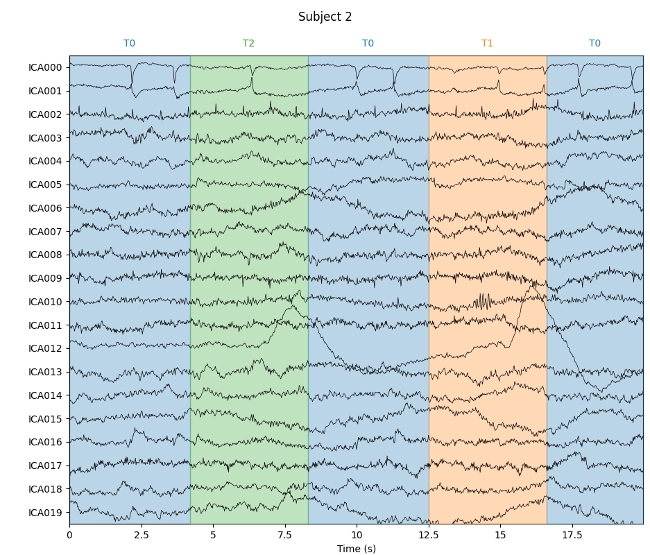
- 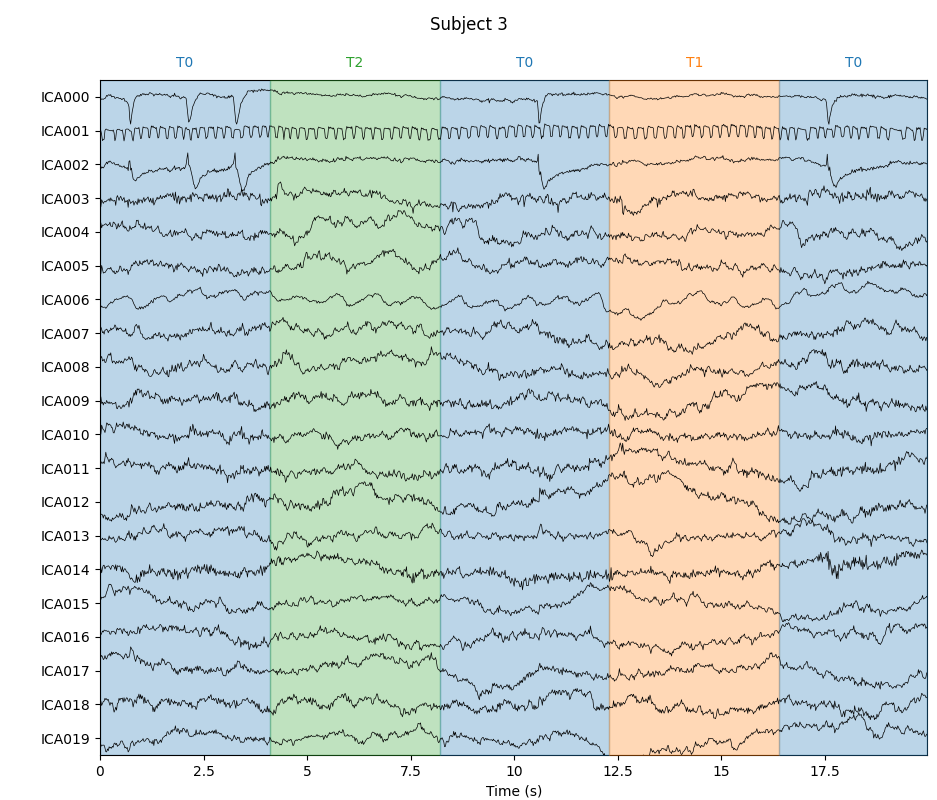
Out:
Creating RawArray with float64 data, n_channels=30, n_times=20000
Range : 0 ... 19999 = 0.000 ... 124.994 secs
Ready.
Creating RawArray with float64 data, n_channels=30, n_times=19680
Range : 0 ... 19679 = 0.000 ... 122.994 secs
Ready.
Creating RawArray with float64 data, n_channels=30, n_times=20000
Range : 0 ... 19999 = 0.000 ... 124.994 secs
Ready.
Creating RawArray with float64 data, n_channels=30, n_times=19680
Range : 0 ... 19679 = 0.000 ... 122.994 secs
Ready.
Notice that subject 1 does seem to have an IC that looks like it reflects
blink artifacts (component ICA000). Notice also that subject 3 appears to
have two components that are reflecting ocular artifacts (ICA000 and
ICA002), but only one was caught by corrmap.
Let’s try setting the threshold manually:
- 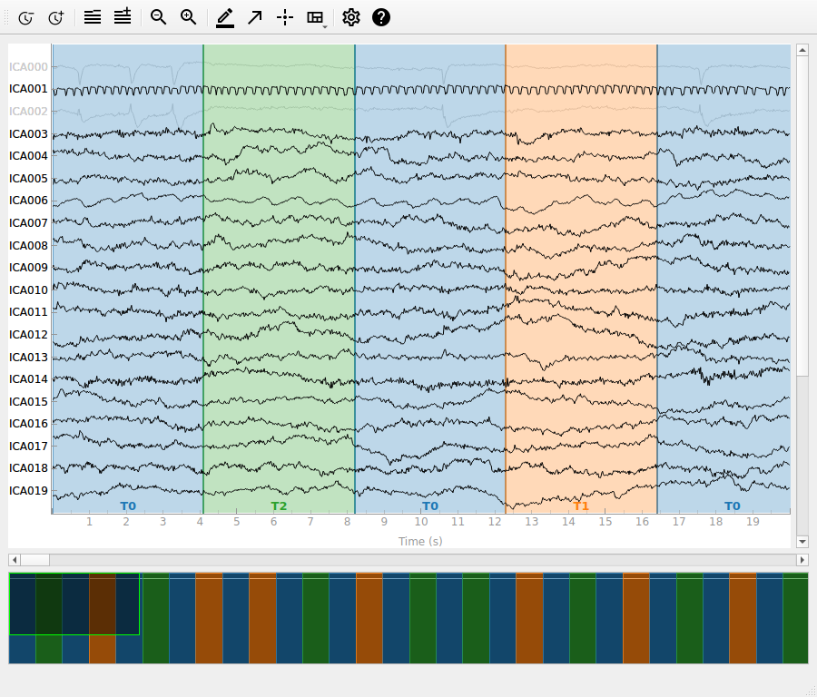
Out:
Median correlation with constructed map: 0.959
Displaying selected ICs per subject.
At least 1 IC detected for each subject.
Now we get the message At least 1 IC detected for each subject (which is
good). At this point we’ll re-run corrmap with
parameters label='blink', plot=False to label the ICs from each subject
that capture the blink artifacts (without plotting them again).
Out:
Median correlation with constructed map: 0.959
At least 1 IC detected for each subject.
[{'eog/0/Fpz': [0], 'eog': [0], 'blink': [0]}, {'blink': [0]}, {'blink': [0, 2]}, {'blink': [0, 2]}]
Notice that the first subject has 3 different labels for the IC at index 0:
“eog/0/Fpz”, “eog”, and “blink”. The first two were added by
find_bads_eog; the “blink” label was added by
the last call to corrmap. Notice also that each
subject has at least one IC index labelled “blink”, and subject 3 has two
components (0 and 2) labelled “blink” (consistent with the plot of IC sources
above). The labels_ attribute of ICA objects
can also be manually edited to annotate the ICs with custom labels. They also
come in handy when plotting:

Out:
Creating RawArray with float64 data, n_channels=30, n_times=19680
Range : 0 ... 19679 = 0.000 ... 122.994 secs
Ready.
As a final note, it is possible to extract ICs numerically using the
get_components method of
ICA objects. This will return a NumPy
array that can be passed to
corrmap instead of the tuple of
(subject_index, component_index) we passed before, and will yield the
same result:
template_eog_component = icas[0].get_components()[:, eog_inds[0]]
corrmap(icas, template=template_eog_component, threshold=0.9)
print(template_eog_component)
- 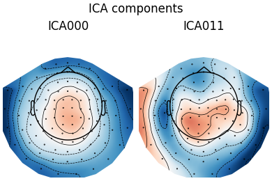
- 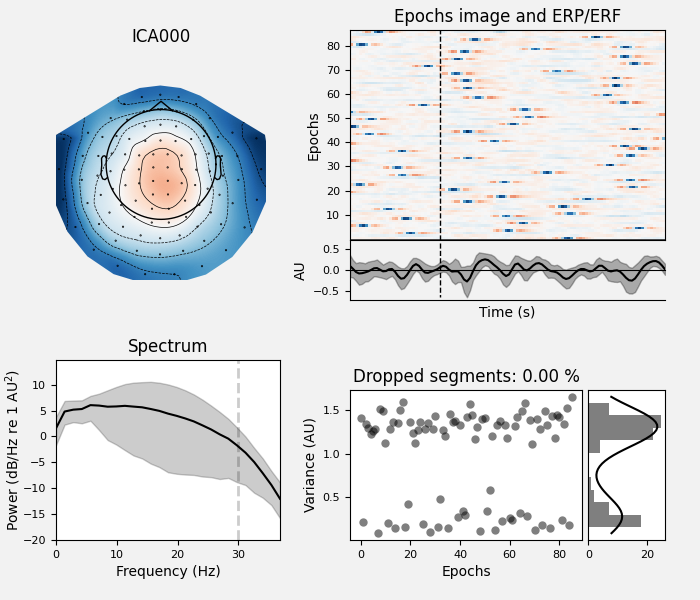
Out:
Median correlation with constructed map: 0.959
Displaying selected ICs per subject.
At least 1 IC detected for each subject.
[-0.36094218 -0.34411933 -0.33501103 -0.32711048 -0.35449996 -0.36782361
-0.4093379 -0.23868424 -0.23971978 -0.23324389 -0.21947301 -0.24316524
-0.26314984 -0.26775517 -0.17300737 -0.18388895 -0.18642426 -0.17724898
-0.19784324 -0.21121246 -0.21926072 -1.71784486 -1.43830913 -1.6035443
-1.38182868 -1.32325305 -0.74414074 -0.96129826 -1.50910792 -0.57297837
-0.64833494 -0.56799643 -0.52523025 -0.50766538 -0.53990696 -0.5446766
-0.66825561 -0.72053232 -0.31156451 -0.38118563 -0.19264017 -0.25192549
-0.09081551 -0.14928374 -0.13935149 -0.17592106 -0.11446649 -0.13899197
-0.14681499 -0.13573816 -0.14736625 -0.15515161 -0.17441405 -0.16608717
-0.13355031 -0.08800236 -0.10706077 -0.10764417 -0.12760799 -0.09798806
-0.07935918 -0.08414256 -0.07455791 -0.04087147]
An advantage of using this numerical representation of an IC to capture a
particular artifact pattern is that it can be saved and used as a template
for future template-matching tasks using corrmap
without having to load or recompute the ICA solution that yielded the
template originally. Put another way, when the template is a NumPy array, the
ICA object containing the template does not need
to be in the list of ICAs provided to corrmap.
Compute ICA components on Epochs¶
ICA is now fit to epoched MEG data instead of the raw data. We assume that the non-stationary EOG artifacts have already been removed. The sources matching the ECG are automatically found and displayed.
Note
This example is computationally intensive, so it might take a few minutes to complete.
Read and preprocess the data. Preprocessing consists of:
MEG channel selection
1-30 Hz band-pass filter
epoching -0.2 to 0.5 seconds with respect to events
rejection based on peak-to-peak amplitude
Note that we don’t baseline correct the epochs here – we’ll do this after cleaning with ICA is completed. Baseline correction before ICA is not recommended by the MNE-Python developers, as it doesn’t guarantee optimal results.
filt_raw.pick_types(meg=True, eeg=False, exclude='bads', stim=True).load_data()
filt_raw.filter(1, 30, fir_design='firwin')
# peak-to-peak amplitude rejection parameters
reject = dict(grad=4000e-13, mag=4e-12)
# create longer and more epochs for more artifact exposure
events = mne.find_events(filt_raw, stim_channel='STI 014')
# don't baseline correct epochs
epochs = mne.Epochs(filt_raw, events, event_id=None, tmin=-0.2, tmax=0.5,
reject=reject, baseline=None)
Out:
Filtering raw data in 1 contiguous segment
Setting up band-pass filter from 1 - 30 Hz
FIR filter parameters
---------------------
Designing a one-pass, zero-phase, non-causal bandpass filter:
- Windowed time-domain design (firwin) method
- Hamming window with 0.0194 passband ripple and 53 dB stopband attenuation
- Lower passband edge: 1.00
- Lower transition bandwidth: 1.00 Hz (-6 dB cutoff frequency: 0.50 Hz)
- Upper passband edge: 30.00 Hz
- Upper transition bandwidth: 7.50 Hz (-6 dB cutoff frequency: 33.75 Hz)
- Filter length: 1983 samples (3.302 sec)
86 events found
Event IDs: [ 1 2 3 4 5 32]
Not setting metadata
Not setting metadata
86 matching events found
No baseline correction applied
Created an SSP operator (subspace dimension = 3)
3 projection items activated
Fit ICA model using the FastICA algorithm, detect and plot components explaining ECG artifacts.
ica = ICA(n_components=15, method='fastica', max_iter="auto").fit(epochs)
ecg_epochs = create_ecg_epochs(filt_raw, tmin=-.5, tmax=.5)
ecg_inds, scores = ica.find_bads_ecg(ecg_epochs, threshold='auto')
ica.plot_components(ecg_inds)
Out:
Fitting ICA to data using 305 channels (please be patient, this may take a while)
Loading data for 86 events and 421 original time points ...
0 bad epochs dropped
Applying projection operator with 3 vectors (pre-whitener computation)
Applying projection operator with 3 vectors (pre-whitener application)
Selecting by number: 15 components
Loading data for 86 events and 421 original time points ...
Applying projection operator with 3 vectors (pre-whitener application)
Fitting ICA took 5.2s.
Reconstructing ECG signal from Magnetometers
Setting up band-pass filter from 8 - 16 Hz
FIR filter parameters
---------------------
Designing a two-pass forward and reverse, zero-phase, non-causal bandpass filter:
- Windowed frequency-domain design (firwin2) method
- Hann window
- Lower passband edge: 8.00
- Lower transition bandwidth: 0.50 Hz (-12 dB cutoff frequency: 7.75 Hz)
- Upper passband edge: 16.00 Hz
- Upper transition bandwidth: 0.50 Hz (-12 dB cutoff frequency: 16.25 Hz)
- Filter length: 6007 samples (10.001 sec)
Number of ECG events detected : 59 (average pulse 58 / min.)
Not setting metadata
Not setting metadata
59 matching events found
No baseline correction applied
Created an SSP operator (subspace dimension = 3)
Loading data for 59 events and 601 original time points ...
0 bad epochs dropped
Reconstructing ECG signal from Magnetometers
Using threshold: 0.21 for CTPS ECG detection
Applying projection operator with 3 vectors (pre-whitener application)
Plot the properties of the ECG components:
ica.plot_properties(epochs, picks=ecg_inds)
- 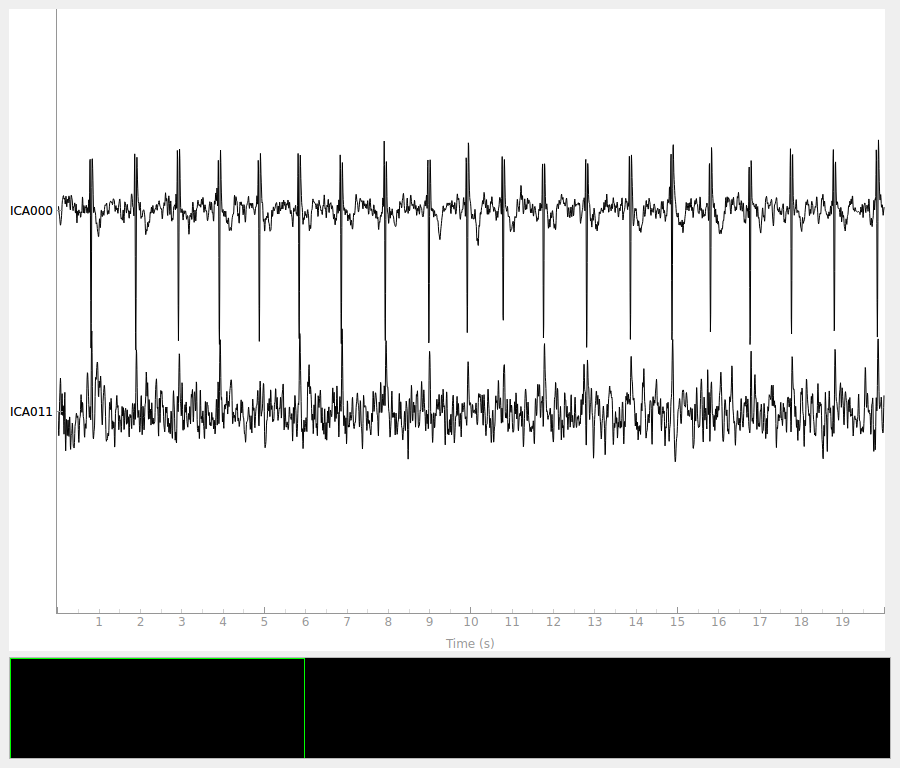

Out:
Loading data for 86 events and 421 original time points ...
Applying projection operator with 3 vectors (pre-whitener application)
Using multitaper spectrum estimation with 7 DPSS windows
Not setting metadata
Not setting metadata
86 matching events found
No baseline correction applied
0 projection items activated
0 bad epochs dropped
Not setting metadata
Not setting metadata
86 matching events found
No baseline correction applied
0 projection items activated
0 bad epochs dropped
Plot the estimated sources of detected ECG related components:
ica.plot_sources(filt_raw, picks=ecg_inds)

Out:
Applying projection operator with 3 vectors (pre-whitener application)
Creating RawArray with float64 data, n_channels=2, n_times=36038
Range : 25800 ... 61837 = 42.956 ... 102.956 secs
Ready.
References¶
- 1
Pierre Ablin, Jean-Francois Cardoso, and Alexandre Gramfort. Faster Independent Component Analysis by preconditioning with hessian approximations. IEEE Transactions on Signal Processing, 66(15):4040–4049, 2018. doi:10.1109/TSP.2018.2844203.
- 2
Irene Winkler, Stefan Debener, Klaus-Robert Müller, and Michael Tangermann. On the influence of high-pass filtering on ICA-based artifact reduction in EEG-ERP. In Proceedings of EMBC-2015, 4101–4105. Milan, 2015. IEEE. doi:10.1109/EMBC.2015.7319296.
- 3
Jürgen Dammers, Michael Schiek, Frank Boers, Carmen Silex, Mikhail Zvyagintsev, Uwe Pietrzyk, and Klaus Mathiak. Integration of amplitude and phase statistics for complete artifact removal in independent components of neuromagnetic recordings. IEEE Transactions on Biomedical Engineering, 55(10):2353–2362, 2008. doi:10.1109/TBME.2008.926677.
- 4
Filipa Campos Viola, Jeremy Thorne, Barrie Edmonds, Till Schneider, Tom Eichele, and Stefan Debener. Semi-automatic identification of independent components representing EEG artifact. Clinical Neurophysiology, 120(5):868–877, 2009. doi:10.1016/j.clinph.2009.01.015.
- 5
Gerwin Schalk, Dennis J. McFarland, Thilo Hinterberger, Niels Birbaumer, and Jonathan R. Wolpaw. BCI2000: a general-purpose brain-computer interface (BCI) system. IEEE Transactions on Biomedical Engineering, 51(6):1034–1043, 2004. doi:10.1109/TBME.2004.827072.
- 6
Ary L. Goldberger, Luis A. N. Amaral, Leon Glass, Jeffrey M. Hausdorff, Plamen Ch. Ivanov, Roger G. Mark, Joseph E. Mietus, George B. Moody, Chung-Kang Peng, and H. Eugene Stanley. PhysioBank, PhysioToolkit, and PhysioNet: Components of a new research resource for complex physiologic signals. Circulation, 2000. doi:10.1161/01.CIR.101.23.e215.
Total running time of the script: ( 3 minutes 0.013 seconds)
Estimated memory usage: 617 MB